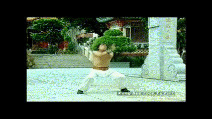
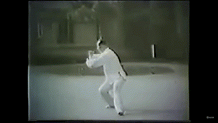
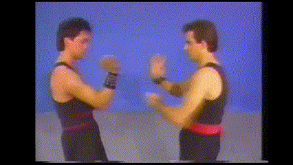
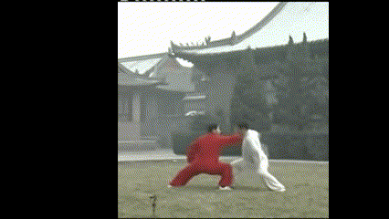
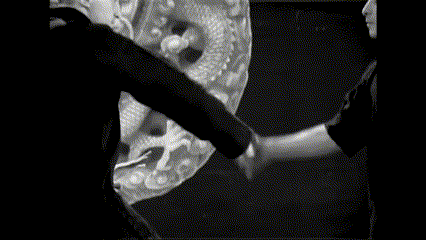
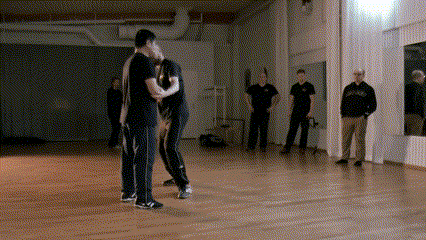

Trabajo de formas en estilos externos

Trabajo de formas en estilos internos

Trabajo en parejas en estilos externos

Trabajo en parejas en estilos internos

Aplicaciones técnicas en estilos externos

Aplicaciones técnicas en estilos internos

En el Sistema Mian Quan, una condición fundamental para considerar correcto un trabajo de Tui Shou es que en él se observe una armonía continua en el movimiento.
Cuando aparecen movimientos bruscos, variaciones repentinas de velocidad o cambios evidentes en la potencia, el trabajo deja de ser propio de un enfoque interno y pasa a asemejarse a los métodos característicos de los estilos externos de Wǔshù. Síntomas claros de un trabajo en Wei Jia son: sudoración excesiva, jadeo y aumento notable del ritmo cardiaco.
Del mismo modo, nunca debería observarse falta de adherencia. Es frecuente ver a practicantes que buscan despegarse del compañero para crear vacíos o espacios desde los cuales ejecutar técnicas prediseñadas (técnicas Fa, palmadas, tirones, etc.). Esta actitud rompe por completo el principio de adherencia que sustenta el desarrollo del Jin.
También es habitual encontrar movimientos estrambóticos que deforman la estructura trabajada en las formas con el fin de generar vacíos artificiales, recuperar posiciones ya perdidas o aplicar “palmaditas” o empujones. Este tipo de gestos no solo contradice la biomecánica interna, sino que impide el desarrollo real de la sensibilidad y del control estructural.